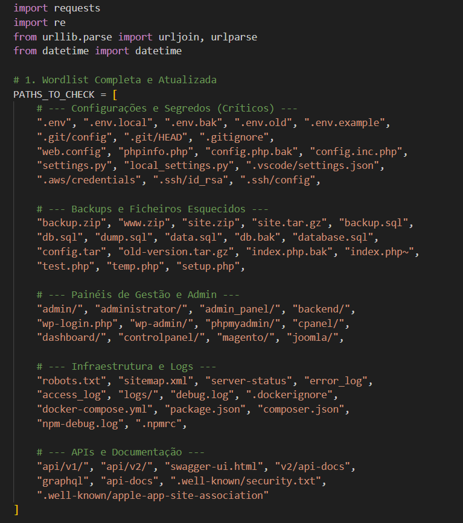
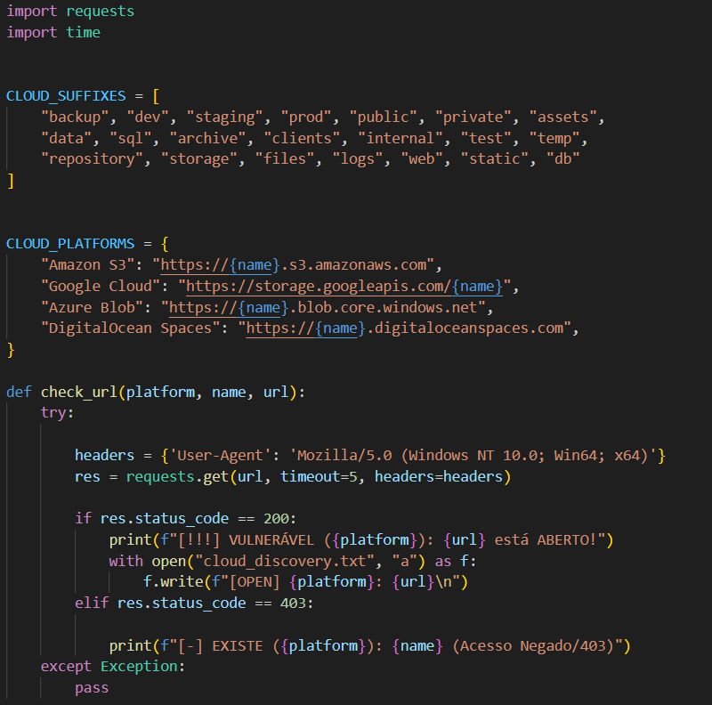

> Cybersecurity Analyst & Researcher
Entusiasta de cibersegurança com foco em análise e pesquisa de resultados. Atualmente, aprofundo os meus conhecimentos no CTeSP de Cibersegurança no ISTEC Porto, enquanto aplico competências práticas como estagiário na Boca do Lobo na Covet Group. Analiso qualquer tipo de vulnerabilidade em websites e aplicações empresariais. Desenvolvo ferramentas próprias para automação de segurança (referidas em baixo).
Monitorização de ativos, análise de vulnerabilidades e resposta a incidentes.
Foco em Segurança de Redes, Ethical Hacking e Administração de Sistemas.

Mapeamento de superfícies de ataque para identificação de segredos e chaves expostas em ficheiros JavaScript.
Attack Surface Mapping
Ferramenta de descoberta de infraestrutura Cloud (AWS/Azure/GCP) e deteção de Buckets mal configurados.
Cloud Security